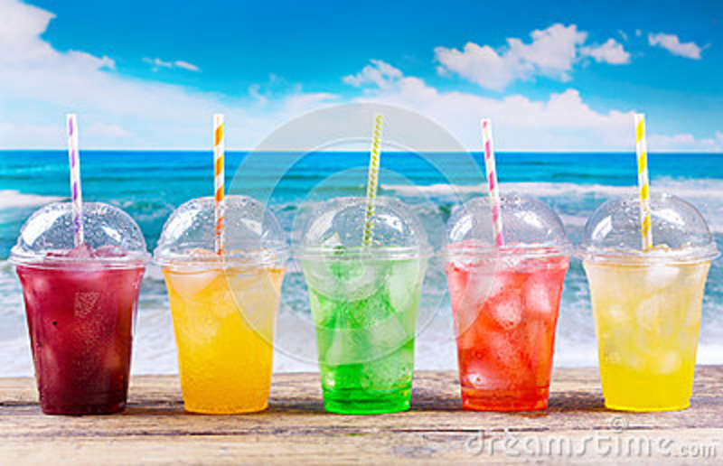
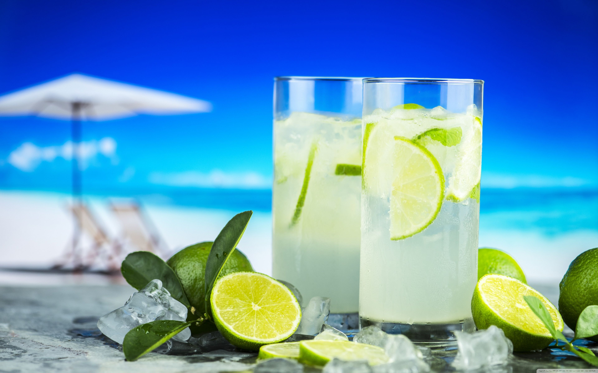
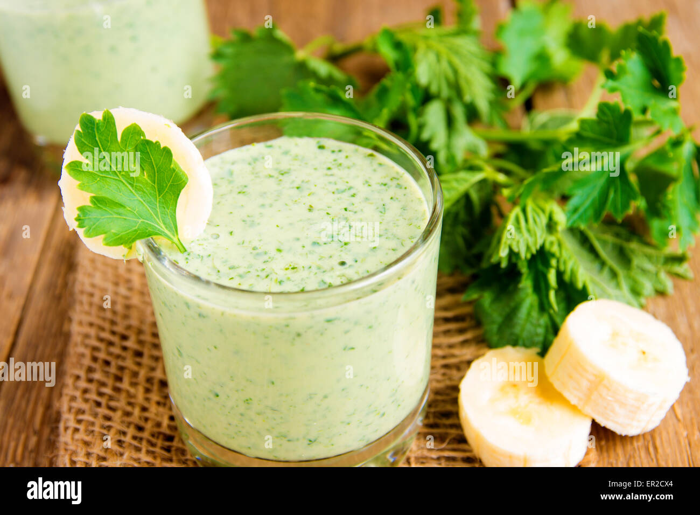
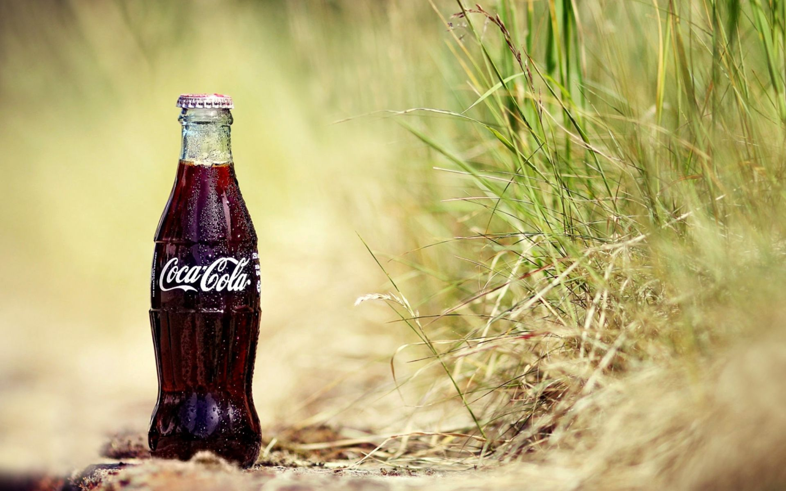

It is a hot summer day and you want to make a slushy (or slushie) at home? Then look no further for a yummy slushy recipe. Here you are. The refreshing summer treat is easier to prepare than you might think. In a nutshell: Mix crushed is and a flavoured liquid you get a slushy! Here is your way to homemade slushies.
Recommendation: grape slush
Nimbu soda is rooted in four core ingredients: lime, soda water, sugar and black salt. Black salt however, isn’t for everyone. My husband hates the smell so much that he couldn’t even bring himself to try the recipe. If you are like him, I would recommend swapping it with some salt and black pepper. In Pakistan, we traditionally use nimbu which are similar to limes. In this recipe, I used large lemons but you are welcome to use regular limes instead for a sharper taste. Feel free to play around with the sugar as well. I wanted to bring the taste closer to what I had back in Islamabad so I increased the sugar but up to 3 tablespoon works as well.
Recommendation: Nimbu soda
Guava is full of nutrients And it is extraordinary rich in vitamin C and it's very good for skin so to make it more yummilicious I love to drink this fresh guava juice which is also good for digestive system.
Recommendation: Fresh guava mint juice
Coca Cola Is The World’S Favourite Soft Drink And Has Been Enjoyed Since 1886. Coca Cola Is Now The Most Recognised Trademark In The World, Available Everywhere From Australia To Zambia. Coca Cola Was Introduced In Pakistan In 1953.
Recommendation: Coca Cola Lt
